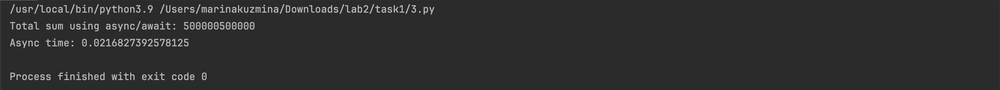

Лабораторная работа 2. Потоки. Процессы. Асинхронность.
Цели
Понять отличия потоками и процессами и понять, что такое ассинхронность в Python.
Практическое задание
Работа о потоках, процессах и асинхронности поможет студентам развить навыки создания эффективных и быстродействующих программ, что важно для работы с большими объемами данных и выполнения вычислений. Этот опыт также подготавливает студентов к реальным проектам, где требуется использование многопоточности и асинхронности для эффективной обработки данных или взаимодействия с внешними сервисами. Вопросы про потоки, процессы и ассинхронность встречаются, как минимум, на половине собеседований на python-разработчика уровня middle и Выше.
Задача 1. Различия между threading, multiprocessing и async в Python
Задача: Напишите три различных программы на Python, использующие каждый из подходов: threading, multiprocessing и async. Каждая программа должна решать считать сумму всех чисел от 1 до 1000000. Разделите вычисления на несколько параллельных задач для ускорения выполнения.
Подробности задания:
- Напишите программу на Python для каждого подхода: threading, multiprocessing и async.
- Каждая программа должна содержать функцию calculate_sum(), которая будет выполнять вычисления.
- Для threading используйте модуль threading, для multiprocessing - модуль multiprocessing, а для async - ключевые слова async/await и модуль asyncio.
- Каждая программа должна разбить задачу на несколько подзадач и выполнять их параллельно.
- Замерьте время выполнения каждой программы и сравните результаты.
Threading:
import threading
import time
start_time = time.time()
def calculate_sum(start, end, result):
total = sum(range(start, end))
result.append(total)
if __name__ == "__main__":
result = []
threads = []
num_threads = 4
chunk_size = 1000000 // num_threads
for i in range(num_threads):
start = i * chunk_size + 1
end = (i + 1) * chunk_size + 1
thread = threading.Thread(target=calculate_sum, args=(start, end, result))
threads.append(thread)
thread.start()
for thread in threads:
thread.join()
total_sum = sum(result)
print("Total sum using threading:", total_sum)
end_time = time.time()
execution_time = end_time - start_time
print(f"Threading time: {execution_time}")
Multiprocessing:
from multiprocessing import Process, Queue
import time
start_time = time.time()
def calculate_sum(start, end, result):
total = sum(range(start, end))
result.put(total)
if __name__ == "__main__":
result = Queue()
processes = []
num_processes = 4
chunk_size = 1000000 // num_processes
for i in range(num_processes):
start = i * chunk_size + 1
end = (i + 1) * chunk_size + 1
process = Process(target=calculate_sum, args=(start, end, result))
processes.append(process)
process.start()
for process in processes:
process.join()
total_sum = 0
while not result.empty():
total_sum += result.get()
print("Total sum using multiprocessing:", total_sum)
end_time = time.time()
execution_time = end_time - start_time
print(f"Multiprocessing time: {execution_time}")
Async:
import asyncio
import time
start_time = time.time()
async def calculate_sum(start, end):
total = sum(range(start, end))
return total
async def main():
tasks = []
num_tasks = 4
chunk_size = 1000000 // num_tasks
for i in range(num_tasks):
start = i * chunk_size + 1
end = (i + 1) * chunk_size + 1
task = asyncio.create_task(calculate_sum(start, end))
tasks.append(task)
results = await asyncio.gather(*tasks)
total_sum = sum(results)
print("Total sum using async/await:", total_sum)
asyncio.run(main())
end_time = time.time()
execution_time = end_time - start_time
print(f"Async time: {execution_time}")
Результаты

Судя по результатам, самым медленным был multiprocessing, async и threading работают почти одинаковое количество времени.
Задача 2. Параллельный парсинг веб-страниц с сохранением в базу данных
Задача: Напишите программу на Python для параллельного парсинга нескольких веб-страниц с сохранением данных в базу данных с использованием подходов threading, multiprocessing и async. Каждая программа должна парсить информацию с нескольких веб-сайтов, сохранять их в базу данных.
Подробности задания:
- Напишите три различных программы на Python, использующие каждый из подходов: threading, multiprocessing и async.
- Каждая программа должна содержать функцию parse_and_save(url), которая будет загружать HTML-страницу по указанному URL, парсить ее, сохранять заголовок страницы в базу данных и выводить результат на экран.
- Используйте базу данных из лабораторной работы номер 1 для заполенния ее данными. Если Вы не понимаете, какие таблицы и откуда Вы могли бы заполнить с помощью парсинга, напишите преподавателю в общем чате потока.
- Для threading используйте модуль threading, для multiprocessing - модуль multiprocessing, а для async - ключевые слова async/await и модуль aiohttp для асинхронных запросов.
- Создайте список нескольких URL-адресов веб-страниц для парсинга и разделите его на равные части для параллельного парсинга.
- Запустите параллельный парсинг для каждой программы и сохраните данные в базу данных.
- Замерьте время выполнения каждой программы и сравните результаты.
Threading:
import threading
import requests
from bs4 import BeautifulSoup
import psycopg2
import time
def parse_and_save(page_url):
page_content = requests.get(page_url).text
page_soup = BeautifulSoup(page_content, 'html.parser')
page_title = page_soup.find('title').get_text()
db_connection = psycopg2.connect(dbname="itmo", user="postgres", password="123", host="localhost")
db_cursor = db_connection.cursor()
db_cursor.execute("INSERT INTO titles (url, title) VALUES (%s, %s)", (page_url, page_title))
db_connection.commit()
db_cursor.close()
db_connection.close()
print(f"URL: {page_url}, Title: {page_title}")
def launch_threads(page_urls):
num_threads = 4
split_urls = [page_urls[i:i+len(page_urls)//num_threads] for i in range(0, len(page_urls), len(page_urls)//num_threads)]
running_threads = []
for urls in split_urls:
new_thread = threading.Thread(target=parse_and_save_urls, args=(urls,))
running_threads.append(new_thread)
new_thread.start()
for thread in running_threads:
thread.join()
def parse_and_save_urls(urls):
for url in urls:
parse_and_save(url)
if __name__ == "__main__":
url_list = ['https://www.ferrari.com/ru-RU', 'https://ru.wikipedia.org/wiki/%D0%A3%D0%B1%D0%B8%D1%82%D1%8C_%D0%91%D0%B8%D0%BB%D0%BB%D0%B0',
'https://www.bmw.ru/', 'https://ru.wikipedia.org/wiki/%D0%9F%D1%80%D0%BE%D0%B3%D1%80%D0%B0%D0%BC%D0%BC%D0%B8%D1%80%D0%BE%D0%B2%D0%B0%D0%BD%D0%B8%D0%B5']
start_timer = time.time()
launch_threads(url_list)
end_timer = time.time()
exec_time = end_timer - start_timer
print(f"Threading time: {exec_time}")
Multiprocessing:
import multiprocessing as mp
import requests
from bs4 import BeautifulSoup
import psycopg2
import time
def parse_and_save(page_url):
page_response = requests.get(page_url)
page_content = BeautifulSoup(page_response.content, 'html.parser')
page_title = page_content.find('title').text
with psycopg2.connect(database="books", user="postgres", password="qwerty12345", host="localhost") as conn:
with conn.cursor() as curs:
curs.execute("INSERT INTO titles (url, title) VALUES (%s, %s)", (page_url, page_title))
conn.commit()
print(f"URL: {page_url}, Title: {page_title}")
def run_processes(page_urls):
num_processes = 4
split_urls = [page_urls[i:i+len(page_urls)//num_processes] for i in range(0, len(page_urls), len(page_urls)//num_processes)]
with mp.Pool(processes=num_processes) as pool:
for urls in split_urls:
pool.starmap(parse_and_save, [(url,) for url in urls])
if __name__ == "__main__":
page_links = [
'https://www.ferrari.com/ru-RU',
'https://ru.wikipedia.org/wiki/%D0%A3%D0%B1%D0%B8%D1%82%D1%8C_%D0%91%D0%B8%D0%BB%D0%BB%D0%B0',
'https://www.bmw.ru/',
'https://ru.wikipedia.org/wiki/%D0%9F%D1%80%D0%BE%D0%B3%D1%80%D0%B0%D0%BC%D0%BC%D0%B8%D1%80%D0%BE%D0%B2%D0%B0%D0%BD%D0%B8%D0%B5',
]
start_time = time.time()
run_processes(page_links)
end_time = time.time()
total_time = end_time - start_time
print(f"Multiprocessing time: {total_time}")
Async:
import aiohttp
import asyncio
from bs4 import BeautifulSoup
import ssl
import certifi
import time
async def get_aiohttp_session():
ssl_context = ssl.create_default_context(cafile=certifi.where())
return aiohttp.ClientSession(connector=aiohttp.TCPConnector(ssl=ssl_context))
async def parse_and_save(url, session):
async with session.get(url) as response:
html = await response.text()
soup = BeautifulSoup(html, 'html.parser')
page_title = soup.find('title').text
return url, page_title
async def launch_tasks(page_urls, num_chunks):
async with await get_aiohttp_session() as session:
chunk_size = len(page_urls) // num_chunks
chunks = [page_urls[i:i + chunk_size] for i in range(0, len(page_urls), chunk_size)]
tasks = []
for chunk in chunks:
chunk_tasks = [asyncio.create_task(parse_and_save(url, session)) for url in chunk]
tasks.append(asyncio.gather(*chunk_tasks))
results = await asyncio.gather(*tasks)
for chunk_result in results:
for result in chunk_result:
print(f"URL: {result[0]}, Title: {result[1]}")
if __name__ == "__main__":
page_links = [
'https://www.ferrari.com/ru-RU',
'https://ru.wikipedia.org/wiki/%D0%A3%D0%B1%D0%B8%D1%82%D1%8C_%D0%91%D0%B8%D0%BB%D0%BB%D0%B0',
'https://www.bmw.ru/',
'https://ru.wikipedia.org/wiki/%D0%9F%D1%80%D0%BE%D0%B3%D1%80%D0%B0%D0%BC%D0%BC%D0%B8%D1%80%D0%BE%D0%B2%D0%B0%D0%BD%D0%B8%D0%B5',
]
start_time = time.time()
num_chunks = 4
asyncio.run(launch_tasks(page_links, num_chunks))
end_time = time.time()
total_time = end_time - start_time
print(f"Async time: {total_time}")
Результаты
Судя по результатам, самым медленным был async, на втором месте multiprocessing, и модуль threading работает быстрее всех.